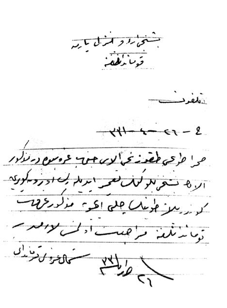
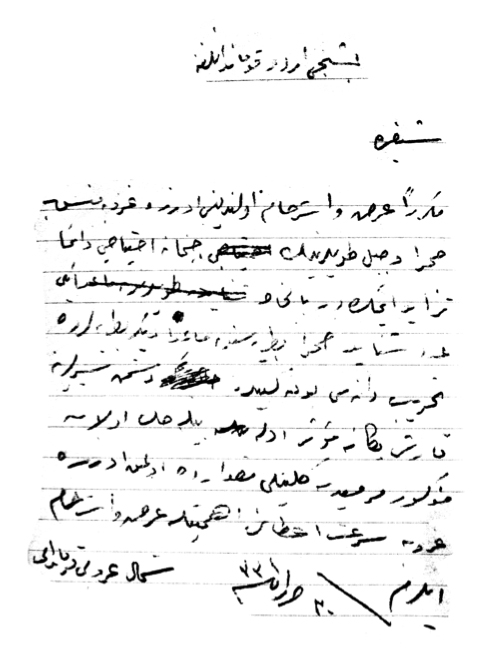

SADELEŞTİRME
1- Beşinci Ordu Erkan-ı Harbiye Başkanlığı’na,
Tahrirat
C. 2 Temmuz 1915 Telefon
Orduca emir verilmedikçe cephane için Şimal Grubu’ndan menzile dönülmemiştir. Yalnız sözlü olarak gruba yapılan tebligat üzerine “Schneider” mermisi almak üzere gönderilen kollara sonradan dönmeleri emri verilmiştir.
Şimdilik bir iki güne kifayet etmek üzere Kolordu’da ancak dört yüz sandık piyade cephanesi kalmıştır ve hiç bomba yoktur. Top cephanesinin ikmali için fırkalardan her gün şiddetle müracaat vaki olmaktadır. On altıncı Fırka’dan alınan bir ihtiyaç yazısı ekte takdim kılındı. Cebel ve sahra kolları hemen kâmilen boşta; bu sebeple daha önce istirham olunduğu üzere iki bin sandık piyade cep-hanesiyle bin beş yüz bomba ve mümkün olan topçu cephanesinin derhal verilmesi için gereken mercilere emir buyrulması istirham olunur.
2 Temmuz 1915
Şimal Grubu Kumandanı
2- Beşinci Ordu Kumandanlığı’na, Tahrirat
|
Şarapnel |
|
|
7. Alay 3. Tabur |
1783 cebel |
|
5. Alay 3. Tabur |
1978 cebel |
|
16. Alay 1. Tabur |
1765 sahra |
|
3 Alay 3. Tabur |
1576 cebel |
|
(?) |
60 |
Tekitle arz ve istirham olunduğu üzere Şimal Grubu’nun mevzi-indeki bataryaların cephane mevcutları yukarıdaki gibidir. Her bataryaya isabet eden mermi miktarı binden azdır. Hâlbuki gerek bir taarruzun vukuunda ve gerekse tarafımızdan yapılacak bir taarruza hazırlıkta her bataryanın bini aşkın mermi sarf ettiği tecrübeler neticesinde anlaşılmıştır. Şu halde mevzide bulunan bataryalar yetmez. Düşmanın devamlı bir taarruzu halinde cephanesiz kalması muhakkak olup Allah saklasın bu gibi bir felâkette cephanesiz kalmamak ve düşmanın günden güne takviye ettiği siperlerini tahriple terakkisine meydan vermemek üzere ara sıra obüs ateşiyle rahatsız etmeye şiddetle ihtiyaç olduğundan dün arz olunan iki bin piyade ve bin beş yüz bomba ile şimdilik sahra mermisi gelinceye kadar birkaç bin cebel ve mümkün olan miktarda on iki (... ) verilmesi için icap edenlere emir buyrulması istirham olunur.
3- Beşinci Fırka Kumandanlığı’na,
2 Temmuz 1915 tarihinde “Şimal Grubu Erkan-ı Harbiye Başkanı” imzasıyla tebliğ edilen bir emirde fırka ile beraber gidecek olan Beşinci Alay’ın Dördüncü Sahra Bataryası’nın yanında bulunan merminin yetersiz olmasından, Şimal Grubu’na ait olan hafif cephane kolu cephanesinin tamamen grupta bırakılması emredildi-ği halde bin şarapnel ile iki bin kadar tahrip tanesi yine Hafif Cephane Kolu’ndan alınarak birlikte gönderilmiştir. Mezkûr emrin icra edilmemesinin sebepleri ile buna cesaret edenlerin seri olarak bildirilmesi ve emredilen cephanenin hemen gruba iadesi gerekmektedir.
4 Temmuz 1915
Şimal Grubu Kumandanı
4- Beşinci Ordu Kumandanlığı’na, Tahrirat
Malumları olduğu üzere düşman günden güne siperlerini tam bir ehemmiyetle takviye etmektedir. Bu siperlere karşı etkili olmak üzere Şimal Grubu’nda bulunan toplardan özellikle on beşlik ve yirmi birlik havanlarla on iki santimetrelik seri ateşli iki obüsün hemen mermileri yok denecek haldedir. Lütfen bu toplar için şiddetle ihtiyacımız olan tahrip tanelerinin seri bir biçimde getirtilmesine ve mevcutlarından yeteri kadarının gruba verilmesine müsaade buyrul-masını önemle arz ve istirham ederim.
4 Temmuz 1915
Şimal Grubu Kumandanı
5- Dokuzuncu, On Altıncı ve Ondokuzuncu Fırkaların Anafarta Mıntıkası Kumandanlarına,
Telefon
Düşman tarafından atılan mermi parçalarıyla alelhusus pirinç ve bakır aksamının, erler vasıtasıyla toplattırılarak Dersaâdet’e gönderilmesi, Başbakanlık Erkân-ı Harbiye Başkanlığı’nın emri gereğinden olmakla fırkalarca ağırlık(?) kumandanlarının yeterli sayıdaki askeri bu işle vazifelendirmeleri, toplanacak parçaların azar azar Beşinci Ordu Fırkası’na teslimi ve durumun bildirilmesi icap etmektedir.
4 Temmuz 1915
Şimal Grubu Kumandanı
6- Dokuzuncu Fırka Kumandanlığı’na,
Telefon
C. 3 Temmuz 1915 Tahrirat 913 ve 914
- Kollar için şimdilik cephane verilemeyecektir. Mevcudun iyi idaresi lazımdır.
- Boş cephane sandığı olmadığından fırkaca yavaş yavaş tedarik edilmesi gerekir.
4 Temmuz 1915
Şimal Grubu Kumandanı
7- Harbiye Nezareti’ne, Şifre
Kaval havanlarda dumansız barut kullanımı mümkündür. Tecrübe edilmek suretiyle muhtelif mesafelere ait hartuçların düzenlenip gönderilmesi arz olunur.
4 Temmuz 1915
Şimal Grubu Kumandanı
8- Beşinci Ordu Kumandanlığı’na, Tahrirat
On Altıncı Topçu Alayı İkinci Bölük Kumandanı Yüzbaşı Ziver Efendi’nin icadı olan bir adet bomba sureti arz ve takdim kılındı.
4 Temmuz 1915
Şimal Grubu Kumandanı
9- Beşinci Ordu Kumandanlığı’na,
Telefon
C. 4 Temmuz 1915
Şimdiye kadar Şimal (Kuzey) Grubu’nda hasara uğrayıp İstanbul’a “İmalat-ı Harbiye”ye gönderilen topların cins, nevi ve kıta numaraları aşağıdaki gibidir.
|
Top numarası |
|
|
11. Alay 2. Tabur 4. Bölük |
111 |
|
5. Alay 2. Tabur 4. Bölük |
575 |
|
9. Alay 3. Tabur 7. Bölük |
İki adet cebel topu. Yalnız birisinin numarası bildirilmiştir. 142. Diğeri dördüncü top. |
4 Temmuz 1915
Şimal Grubu Kumandanı
10- Harbiye Nezareti’ne,
Şifre
C. 6-7 Temmuz 1915
21 santimetrelik havanların muadil tanelerinde kullanılan tıpaların kutuları üzerinde “Kırkağaç Tıpa Fabrikası mamullerinden man-tel seyyar toplarının milsiz tanelerine mahsus çarpışma tıpası” ibaresi mevcuttur. Bu defa bahsedilen mermilerin içindeki çakıl barutu çıkarılarak top barutuyla karıştırıldıktan sonra doldurularak atılmış ve hemen tamamen denecek derece yaralanmış olduklarına bakılacak olursa tıpalarının fiil icra ettikleri ve yalnız çakıl barutu ateşleyecek kadar hararet ortaya çıkaramadıkları ve mermilerin ateşleme kovanı olmadığından ileri geldiği anlaşılmakta olduğu arz olunur.
7 Temmuz 1915
Üçüncü Kolordu Kumandanı
11- Beşinci Ordu Erkan-ı Harbiye Başkanlığına,
Telefon
Gruba tahsis edilen seksen adet top henüz aldırılmamıştır. Grupça da ihtiyaç olmadığından icap eden mahallere verilmesi temenni olunur.
7 Temmuz 1915
Şimal Grubu Kumandanı
12- Şimal Grubu Kumandanlığı’na, Telefon
C. 6 Temmuz 1915 tarih ve 1832 numaralı ilâm ile gönderilen evraka cevaptır. Tahrirat
Bir tecrübesi emredilen obüs namlusuyla, atışı için gerekli mermi hakkında hiçbir malumat mevcut olmadığı gibi burada zikredilen namluyla tecrübe edecek mermi bulunmamaktadır. Bu sebeple en az iki yüz kadar tahrip tanesine (hartuçla beraber) ihtiyaç vardır.
Eğer orada da mevcudu yoksa hemen getirtilmesine tevessül olunması arz edilir.
7 Temmuz 1915
(Not: Görüşme kaydının üzerinde bazı satırların ve kaydın tamamının, üzeri çizilmiştir. Bu çizgilerden kaydın iptal edildiği anlaşılmaktadır).
13- Beşinci Ordu Erkan-ı Harbiye Başkanlığı’na,
İlâm
Tecrübesi emredilen obüs topu için Şimal Grubu’nda hiçbir atım mermi yoktur. Hartuçla beraber iki yüz adet tahrip tanesinin de gruba verilmesi temenni olunur.
14- Harbiye Nezareti’ne, Şifre
Otuz Dokuzuncu Alay’ın Yedinci Cebel Bataryası’nın Krupp resmi olan topları gerek Bulgar Harbi esnasında, gerek bu muharebenin başlangıcından beri sıkça kullanılmasından dolayı, yivleri aşınmış ve balistik özellikleri hemen hemen kaybolmuş bir hale gelmiş. Bunlar sonradan teşkil edilen Sekizinci Batarya’nın toplarıyla değiştirilerek ihtiyata verilmişse de ihtiyaç anında adı geçen bataryada ateş hattında kullanılacağından namlularının tebdili için dört adet namlunun süratle Kolordu adına Akbaş İskelesi’ne sevki istirham olunur.
7 Temmuz 1915
Üçüncü Ordu Kumandanı
15/16- Beşinci Ordu Menzil Yarma Kumandanlığı’na,
Telefon
C. 9 Temmuz 1915
Sahra Topçu Dokuzuncu Alayı, Cenup Grubu’ndadır. Adı geçen alayın Beşinci Bölüğü’nün tamir edilerek Uzunköprü’ye gönderilen topunun getirtilmesi için zikredilen grup kumandanlığına müracaat olunması lazımdır.
9 Temmuz 1915
Şimal Grup Kumandanı
17- Beşinci ve On Dokuzuncu Fırka Kumandanlıklarına,
Telefon
Beşinci Topçu Alayı’nın İkinci Taburu’nun Dördüncü Bataryası da Conkbayırı’nda ihtiyatta ve daha önce olduğu gibi emriniz altındadır. Zikredilen batarya, lüzumu halinde işgal etmek üzere Ağıl Deresi sırtlarındaki Cebel Bataryası yakınlarında bir mevzi keşif ve ayrıca Conkbayırı’nda da Beşinci Batarya’nın gerisinde ve Koca Hüseyin Dağı’yla Conkbayırı arasındaki sırtta şimdiden batarya mevziini hazır edecek ve her iki mevziin hazırlanması hakkında On Dokuzuncu Fırka’dan kolorduya malumat verilecek.
9-10 Temmuz 1915
18- On Dokuzuncu Fırka Topçu Grubu Kumandanı Binbaşı Gâlib Bey’e,
Telefon
Geceleri sahile yaklaşarak Cesarettepe’deki siperlerinden atılan torpidonun bir (?) hedef tutmasıyla mesafesi müsait olduğu takdirde zikredilen torpidodan üzerine mesafenin artırılmasıyla birkaç atış icrası On Dokuzuncu Fırka Kumandanlığı’nca talep edilmekte olduğu Erkan-ı Harbiye Başkanlığı’ndan bildiriliyor. Mümkün olan hususların icrasıyla neticesinin haber verilmesi temenni olunur.
9-10 Temmuz 1915
Şimal Grubu Topçu Kumandanı
Kaymakamı Hasan
19- Bahşı Köyü’nde Havan Bataryası Kumandanlığı’na,
Tahrirat
Elinizde bulunan havan toplarıyla malzemesini de bir kumandanla ve efrattan topçu olanları On Dokuzuncu Fırka’ya mensup on beş santimetrelik şeşhaneli havan takımına ve geriye kalan efradı da depoya teslim ederek önceden vazife yaptığınız kol kumandasına geri dönünüz.
10 Temmuz 1915
Şimal Grubu Kumandanı
20- Beşinci Fırka Kumandanlığı’na, Telefon
“Schneider” sahra toplarının açı ölçüm aletlerini yerlerine alıştırmak üzere İ’mâlât-ı Harbiyye’den İsmail Hakkı Usta gelecektir. İkinci Taburca vazifesinin bitiminde Cenup Grubu’ndaki Birinci Tabur’a sevki orada da vazifesini tamamladıktan sonra İstanbul’a dönmesi için gereken kolaylığın sağlanması temenni olunur.
10 Temmuz 1915
Şimal Grubu Kumandanı
21- Beşinci, Dokuzuncu, On Altıncı, On Dokuzuncu Fırka Kumandanlıklarıyla Anafarta Mıntıkası Kumandanlığı’na,
Telefon
Şimdiye kadar atılan bilumum topçu mermilerinden her ne suretle olursa olsun ateş almayan ve atılamayan ne kadar mermi varsa her birinin sebepleriyle beraber hangi cins mermi ve hangi fabrikanın imalatı olduğunun seri bir biçimde tahkiki ve bildirilmesi temenni olunur.
10 Temmuz 1915
22- Beşinci Ordu Kumandanlığı’na,
Tahrirat
On Altıncı Fırka’ya mensup Üçüncü Topçu Alayı’nın Üçüncü Cebel Taburu Sekizinci Bölüğü’nde atış sırasında bazı mermiler hakkında meydana gelen halleri belirten evrakla beraber, bir adet tahrip tanesi ait, makamına tebliğ edilmek üzere ekte arz ve takdim kılındı.
10 Temmuz 1915 Hasan
23- Beşinci Ordu Kumandanlığı’na,
Tahrirat
Düşman birkaç günden beri dikkati çekecek derecede büyük bir faaliyetle hazırlıklarda bulunmaktadır. Bugün birinci sınıftan Aga-memnon zırhlısıyla bir kruvazör ve torpido geçer muhtelif noktaları devamlı ateş altına almış ve kara bataryaları dahi en ilerideki siperlerimizi şarapnel ateşiyle oldukça hasara uğratmıştır. Düşmanın şer faaliyetine nazaran bugün yarın bir taarruz yapması ihtimali büyüktür. Bu gibi bir hal karşısında en büyük faaliyet gösterecek olan topçumuzun nizami cephanesi dahi yoktur. Şiddetli devam edecek birkaç saatlik muharebeden sonra bataryaların ekseriyetinin cephanesi kalmayacağı muhakkaktır. Bu sebeple Şimal Gurubu’nun mermi ihtiyacı olan (... ) sahra ile (... ) atım cebel ve on iki santimetrelik obüsle on beşlik ve yirmi birlik havanlar için dahi kâfi miktarda merminin ve bin sandık piyade cephanesinin mümkün olan en kısa zamanda Şimal Grubu’na gönderilmesini hususunu istirham eylerim.
24- Dokuzuncu Fırka Kumandanlığı’na, Şifre
Düşman gemilerinin sahile yaklaşıp serbest ateş etmelerine meydan vermemek üzere otuz çap uzunluğunda bir adet on iki santimetrelik top, Kabaltepe’de münasip ve korunaklı bir mahalle konmak üzere fırkanıza verilmiştir. Mezkûr top elli atımıyla külliyen limana gelmiştir. Mantel taburunun hayvanlar ve araçlarıyla hemen nakli ve mermisinin had safhada azlığı dolayısıyla hiçbir atımının lüzumsuz sarfından kaçınılması ve atış zaruri görüldüğü zaman dahi diğer bataryalarla ölçüm yapıldıktan sonra birkaç atımla tesir elde edilmesine gayret olunması ehemmiyetle temenni olunur.
11 Temmuz 1915
Şimal Grubu Kumandanı
25- On Dokuzuncu Fırka Topçu Grubu Kumandanlığı’na,
Telefon
Dokuzuncu Topçu Alayı’nın Üçüncü Cebel Taburu’na ait bir adet nişangâh Akbaş İskelesi’nde Menzil Yarma Kumandanlığı’na gelmiştir. Mazbata karşılığında teslim alınıp haber verilmesi.
11 Temmuz 1915
Topçu Kumandanı Kaymakamı Hasan
Şimal Grubu Kumandanı
26- Beşinci Ordu Kumandanlığı’na,
Telefon
C. 10 Temmuz 1915 Telefon
Beşinci Topçu Alayı’nın İkinci Taburu’nun topları için getirtilen iki ustanın daha önce Cenup Grubu’na gönderildiği malumatınıza arz olunur.
11 Temmuz 1915
Şimal Grubu Kumandanı
27- Beşinci Ordu Kumandanlığı’na,
Tecrübesi emir olunan iki obüs topu Azmakdere’ye götürülmüştür. Mermileri olmadığından her top için yüzer mermiden iki yüz merminin süratli bir şekilde verilmesi ve aksi halde tecrübeden bir netice alınmasının mümkün olamayacağı arz olunur.
12 Temmuz 1915
28- Beşinci Ordu Kumandanlığı’na, Tahrirat
On Beşinci Topçu Alayı’nın İkinci Taburu’nun Şimal Grubu’ndan ayrılması dolayısıyla sol cenah topçusunun hafiflediği bugün düşmanın taarruzu esnasında açığa çıkmıştır. Bu sebeple Akbaş İskelesi civarında bulunan Sahra Bataryası’nın gruba iadesiyle tayyareye atmak üzere aynı vazifeyi görebilecek Cebel Bataryası’nın yerinde bırakılmasına müsaade buyrulması arz olunur.
12 Temmuz 1915 Hasan
29- Beşinci Ordu Kumandanlığı’na, Tahrirat
On beş santimetrelik şeşhâneli havanların düşmana vermekte olduğu hasar gayet fazla olup, söz konusu topların mermilerine şiddetle ihtiyaç vardır. Mümkün olan en hızlı şekilde İstanbul’daki mevcudunun getirilmesi ve gruba verilmesine müsaade edilmesi arz olunur.
12 Temmuz 1915
Hasan
30- Beşinci Ordu Kumandanlığı’na,
Şifre
Tekrar tekrar arz ve istirham olunduğu üzere gruba mensup sahra ve cebel toplarının cephane ihtiyacı daima artmaktadır. Bilhassa iki adet Schneider sahra bataryasından başka, diğer bataryalarda tahrip danesi yok gibidir. Düşman siperlerine karşı tek etkili olabilecek olan söz konusu mermiden çok miktarda gruba süratle verilmesini arz ve istirham ederim.
13 Temmuz 1915
Şimal Grubu Kumandanı
31- Beşinci Ordu Kumandanlığı’na, Şifre
Düşmanın bomba ile olan faaliyeti kıtalarımızı yaralamaktadır. Aynı şekilde karşılık vermek üzere bomba atabilmek için her iki fırkaca üçer yüz bomba talep olunmaktadır. Şimdilik beş bin bombanın hızlı bir şekilde verilmesi arz olunur.
14 Temmuz 1915
Şimal Grubu Kumandanı
32- Beşinci Fırka Kumandanlığı’na, Telefon
Beşinci Topçu Alayı için bir sandıkta üç adet Schneider hava baskı tulumbası gelmiştir. Akbaş’ta Menzil Yarma Kumandanlığı’ndan mazbata mukabili teslimi temenni olunur.
14 Temmuz 1915
Şimal Grubu Kumandanı
33- On Dokuzuncu Fırka Kumandanlığı’na,
Telefon
Havan Takımı’nda bulunan iki zabitten Mülâzım Lütfi Efendi’nin yeni tayin edildiği mahalle gönderilmek üzere Dokuzuncu Fırka Kumandanlığı’na sevki gerekmektedir.
Temmuz 1915
Şimal Grubu Kumandanı
Dokuzuncu Fırka Kumandanlığı’na,
Telefon
Fırkanıza verilen on iki santimetrelik bir adet top için Teğmen Lütfi Efendi tayin olunmuştur. Hemen yüksek taraflarına sevki On Dokuzuncu Fırka Kumandanlığı’na yazılmıştır. Vardığında belirtildiği üzere istihdamı temenni olunur.
15 Temmuz 1915
Şimal Grubu Kumandanı
34- Dokuzuncu Fırka Kumandanlığı’na,
Şifre
Özellikle topçu cephanesinin iktisatlı kullanılması gittikçe önem kazanmaktadır. Kolların cephanesini ikmale vaziyet müsait değildir. Elinizdeki cephanenin iyi idare edilmesi ve muhafazasını, düşmanın çıkış ve taarruzunun defedilmesi için beklemeye ve gözlemeye şiddetle lüzum vardır. Sahilden uzak geçen ve çıkış teşebbüsünde bulunmayan gemilere karşı cephane harcanmasından önemle kaçınılması gerekir. Yalnız düşmanın taarruzu hâlinde Palamutluk’taki bataryanın On Altıncı Topçu Alayı’yla haberleşerek taarruz kıtalarının (?) ateşine alınmasının ve dikkat ve zamanıyla ateş açılmasının temini gerekir.
15 Temmuz 1915
Şimal Grubu Kumandanı
35- Beşinci Ordu Kumandanlığı’na,
Telefon
C. 15 Temmuz 1915
Schneider topları için on beş gün müddetle İstanbul’dan gönderilen Haydar Usta ile arkadaşı, adı geçen alayın Üçüncü Taburu’ndan hayvan verilerek bir zabit refakatinde Cenup Grubu’ndaki Birinci Tabur’a gönderilmişti. Oraca vazifelerini tamamlayıp şimdiye kadar dönmeleri muhtemel bulunan ustaların şu anda Şimal Grubu’nda bulunmadıkları arz olunur.
15 Temmuz 1915
Şimal Grubu Kumandanı
36 a- Beşinci Ordu Erkan-ı Harbiye Başkanlığı’na,
Telefon
Sahte toplar için menzilde mevcut olduğu haber verilen sahra toplarından ne kadar verilmesi mümkünse aldırılmak üzere haber verilmesi ve menzile de tebliğ edilmesi temenni olunur.
15 Temmuz 1915
Şimal Grubu Kumandanı
36 b- Beşinci Ordu Kumandanlığı’na,
Telefon
Kıtalara vermek üzere grupta bomba kalmamıştır. Verilmesi istirham olunan beş bin bombanın hemen aldırılmak üzere verilmesi emrinin icap edenlere tebliği arz olunur.
16 Temmuz 1915
Şimal Grubu Kumandanı nâmına
Erkân-ı Harbiyye Başkanı
37- Beşinci Ordu Kumandanlığı’na,
Tahrirat
Son zamanda Şimal Grubu’na verilen dört adet sahra seri ateşli on buçuk santimetrelik obüs topunun yalnız şarapnelden ibaret olan, habbesinde de ritim bulunmayan ve birkaç yüz atımdan fazla olmayan cephanesiyle düşmana karşı yaptığı tesir hakkında On altıncı Fırka Topçu Grubu Kumandanlığı’nın raporu ekte takdim kılındı. Adı geçen raporda görüleceği üzere düşman gerilerine fevkalade etki yapmakta bulunan mezkûr toplar için gerekli tahrip dane-si sıralı tıpalı şarapnelin mümkün olan en hızlı şekilde getirtilmesi-ne yardım edilmesini arz ve istirham ederim.
17 Temmuz 1915
Hasan
38- Beşinci Fırka Kumandanlığı’na,
Telefon
Ağılderesi’nde bulunan cebel bataryasının cephane mevcudu haddinden fazla azalmaktadır. Bu sebeple mücbir haller hissedilme-dikçe beyhude yere düşmanın gerilerinde görülen tek tük neferlerine karşı cephane harcanmasından önemle kaçınılması ve batarya mevcudunun bin beş yüz atımdan aşağı bir dereceye indirilmemesi ehemmiyetle talep olunur.
17 Temmuz 1915
Şimal Grubu Kumandanı
39- On Altıncı Fırka Kumandanlığı’na,
Telefon
Fırkaya mensup topçu bataryalarının cephane mevcudunun haddinden fazla azaldığı görülmüştür. Düşmanın ciddi bir hareketi görülmedikçe cephane sarfı katiyen caiz olmayıp bilhassa siperleri tahrip maksadıyla cephane sarfından kaçınılması ve her atılan atımdan bir sonuç alınmaya çalışılması elzemdir. Her bir batarya için cephane mevcudunun en az bin atım olmak üzere muhafazasına ve düşmanın ciddi bir taarruzuna karşı veya tarafımızdan icra edilecek bir taarruzda kazanılacak başarının temini maksadına harcanmak üzere iyi idare ve muhafaza edilmesi önemle tebliğ ve talep olunur.
19 Temmuz 1915
Şimal Grubu Kumandanı
40 a- Beşinci Ordu Kumandanlığı’na,
Tahrirat
Gruba verilen on adet dokuzluk kaval havanlar fırkalara verildiği halde mesafesinin azlığından ötürü istifade mümkün olamayacağı anlaşılması üzerine iade edilmiştir ve bunlardan beşi bugün depoda muhafaza edilmektedir. Diğer beşi Ağıldere mıntıkasına verilmiş ve bunlardan ikisi bir mevzie konmuş ise de kullanmak mümkün olmamıştır. Zira mesafesinin pek yakın olması ve siyah dumanlı barutla atılması, düşman tarafından görülmesine ve ardından imhaya maruz kalmasına sebep olmaktadır. Bu yüzden siperler de ateş altında kaldığından kıtaların siperlerde barınmasını zorlaştırmaktadır. Yalnız son zamanda müstahkem mevkilere gönderilen bir adet otuz yedi santimetrelik kaval havan, mesafesi büyük olduğundan geri bir mevkie yerleştirilerek dün başarıyla tecrübe edilmiştir. Dolayısıyla otuz yedi santimetrelik havanlardan başkasına grupça ihtiyaç olmadığı arz olunur.
20 Temmuz 1915
40 b- Beşinci Ordu Kumandanlığı’na,
Tahrirat
Bazı topların poyralarının aşınmasından dolayı atış sıhhatinin bozulduğu kıtalar tarafından bildirilmektedir. Bu sebeple gerek sahra ve gerekse cebeller için yeterli miktarda tekerlek poyrasının seri bir biçimde getirtilmesine yardımcı olunması arz olunur.
20 Temmuz 1915
Hasan
TRANSKRİPSİYON
1- Beşinci Ordu Erkân-ı Harbiyye Riyâset-i Celîlesi’ne,
Tahrîrât
C. 19.4.[1]331 Telefon
Orduca emir verilmedikçe cephâne için Şimâl Grubu’ndan menzile ric’at olunmamıştır. Yalnız şifâhî olarak gruba icrâ kılınan teblîgât üzerine “schneider” (şinayder) mermisi almak üzere gönderilen kollara muahharen avdet etmeleri emri verilmiştir.
Şimdilik bir iki güne kifayet itmek üzere kolorduda ancak dört yüz sandık piyâde cephânesi kalmıştır ve hiçbir adet bomba yoktur. Top cephânesinin ikmâli için fırkalardan her gün şiddetle mürâca’at vukû’a gelmektedir. On Altıncı Fırka’dan alınan bir ihtiyaç takrîri leffen takdîm kılındı. Cebel ve sahrâ kolları hemen kâmilen boşta; bu sebeple akdemce istirhâm olunduğu vechile iki bin sandık piyâde cephânesiyle bin beş yüz bomba ve mümkün olan topçu cephânesinin sür’at-i i’tâsı için îcâb edenlere emr u iş’ârı müster-hamdır.
Fî 19 Haziran sene [1]331
Şimâl Grubu Kumandanı
2- Beşinci Ordu Kumandanlığı’na,
Tahrîrât
|
Şarâbnel |
|
|
7. Alay 3. Tabur |
1783 cebel |
|
5. Alay 3. Tabur |
1978 cebel |
|
16. Alay 1. Tabur |
1765 sahrâ |
|
3 Alay 3. Tabur |
1576 cebel |
|
(?) |
60 |
Te’kîden arz u istirhâm olunduğu vechile Şimâl Grubu’nun mevzi’indeki bataryalarının cephâne mevcûdları ber-vech-i bâlâ olup her bataryaya isâbet eden mikdâr-ı mermi binden dûndur. Hâlbuki gerek bir ta’arruzun vukuunda ve gerekse tarafımızdan icrâ kılınan bir ta’arruzun ihzârında her bataryanın bini mütecâviz mermi sarf ettiği lede’t-tecrübe anlaşılmıştır. Şu hâlde mevzi’de bulunan bataryalar yetmez. Düşmanın devamlı bir ta’arruz hâlinde cephânesiz kalması muhakkak olup hafazana’llâh bu gibi bir felâkette cephânesiz kalmamak ve düşmanın günden güne takviye etmekte bulunduğu seyirlerini tahrîble terakkîsine meydan vermemek üzere ara sıra obüs ateşiyle iz’âcına eşedd-i ihtiyâc olduğundan dünkü gün arz u istirhâm olunan iki bin adet piyâde ve bin beş yüz bomba ile şimdilik sahrâ mermisi gelinceye kadar birkaç bin cebel ve mümkün olan mikdârda on iki (...) (silinmiş) i’tâsı için îcâb edenlere emir buyrulması...
3- Beşinci Fırka Kumandanlığı’na,
Fî 19 Haziran sene [1]331 tarîhinde Şimâl Grubu Erkân-ı Harb Reisi imzâsıyla teblîğ edilen bir emirde fırka ile beraber gidecek olan Beşinci Alay’ın Dördüncü Sahrâ Bataryası’nın nezdindeki mermisinin mikdâr-ı kifâyede olmasından Şimâl Grubu’na âit olan hafif cephâne kolu cephânesinin kâmilen grupta terki emrolun-duğu halde bin şarapnel ile iki bin kadar tahrîb dânesi yine Hafif Cephâne Kolu’ndan alınarak birlikte gönderilmiştir. Mezkûr emrin icrâ olunmaması esbâbıyla mütecâsirînin serîan iş’ârı ve emrolunan cephânenin hemen gruba i’âdesi muktezîdir.
Fî 21 Haziran sene [1]331
Şimâl Grubu Kumandanı
4- Beşinci Ordu Kumandanlığı’na,
Tahrîrât
Ma’lûm-ı sâmîleri olduğu üzere düşman günden güne siperlerini kemâl-i ehemmiyetle takviye etmektedir. Bu siperlere karşı mü’essir olmak üzere Şimâl Grubu’nda mevcûd olan toplardan bi’l-hâssa on beşlik ve yirmi birlik havanlar, on iki santimetrelik serî’ ateşli iki obüsün hemen mermileri mefkûd denecek bir hâldedir. Lütfen bu toplar için şiddetle ihtiyacımız olan tahrîb dânelerinin sür’at-i mümkine ile celb ve mevcûdlarından mikdâr-ı kâfîsinin gruba i’tâsına müsâ’ade buyrulmasını kemâl-i ehemmiyetle arz u istirhâm eylerim.
Fî 21 Haziran sene [1]331
Şimâl Grubu Kumandanı
5- Dokuzuncu, On Altıncı ve On dokuzuncu Fırkaların Anafarta Mıntıkası Kumandanlarına,
Telefon
Düşman tarafından endâht edilen mermi parçalarıyla ale’l-husûs pirinç ve bakır aksâmının efrâd vâsıtasıyla toplattırılarak Dersa’âdet’e gönderilmesi Başkumandanlık Erkân-ı Harbiye Riyâseti’nin emri iktizâsından olmakla fırkalarca ağırlık(?) kumandanlarının mikdâr-ı kâfî efrâdı işbu vazîfe ile tavzîflerini ve terâküm ettirilecek parçaların ceste ceste Beşinci Ordu Fırkası’na teslîm ve inbâsı muktezîdir.
Fî 21 Haziran sene [1]331
Şimâl Grubu Kumandanı
6- Dokuzuncu Fırka Kumandanlığı’na,
Telefon
C. 20.4.331 Tahrîrât 913 ve 914
1- Kollar için şimdilik cephâne verilemeyecektir. Mevcûdun hüsn-i idâresi lâzımdır.
2- Tehî cephâne sandığı olmadığından fırkaca tedrîcî bir sûretde tedâriki muktezîdir.
Fî 21 Haziran sene [1]331
Şimâl Grubu Kumandanı
7- Harbiye Nezâret-i Celîlesi’ne,
Şifre
Kaval havanlarda dumansız barut isti’mâli mümkün. Bi’t-tecrübe mesâfât-ı muhtelifeye âid hartuçların tanzîm ve irsâli ma’rûzdur.
Fî 21 Haziran sene [1]331
Şimâl Grubu Kumandanı
8- Beşinci Ordu Kumandanlığı’na, Tahrîrât
On altıncı Topçu Alayı İkinci Bölük Kumandanı Yüzbaşı Ziver Efendi’nin ihtirâ’-gerdesi olan bir adet bomba sûreti arz ve takdîm kılındı.
Fî 21 Haziran sene [1]331
Şimâl Grubu Kumandanı
9- Beşinci Ordu Kumandanlığı’na,
Telefon
C. 21.4.331. Tekfur(?)
Şimdiye kadar Şimâl Grubu’nda hasâra uğrayıp Dersa’âdet’te “İ’mâlât-ı Harbiye”ye gönderilen topların cins ve nev’ ve kıta’ât nu-meroları ber-vech-i âtîdir.
|
Top numerosu |
|
|
11. Alay 2. Tabur 4. Bölük |
111 |
|
5. Alay 2. Tabur 4. Bölük |
575 |
|
9. Alay 3. Tabur 7. Bölük |
İki adet cebel topu. Yalnız birisinin numerosu bildirilmiştir. 142. Diğeri dördüncü top. |
Fî 21 Haziran sene [1]331
Şimâl Grubu Kumandanı
10- Harbiye Nezâret-i Celîlesi’ne,
Şifre
C. 23/24-4-331
Yirmi bir santimetrelik havanların mu’addil dânelerinde kullanılan tıpaları kutuları üzerinde “Kırkağaç Tıpa Fabrikası ma’mûlâtından mantel seyyar toplarının milsiz dânelerine mahsûs müsâdeme tıpası” ibâresi mevcûttur. Bu defa mezkûr mermilerin derûnundaki çakıl barutu çıkarılarak top barutuyla karıştırıldıktan sonra imlâ edilerek endâht edilmiş ve hemen kâmilen denecek derece yaralanmış bulunmasına nazaran tıpaları icrâ-yı fi’il ettikleri ve yalnız çakıl barutu ateşleyecek kadar bir harâret vucûda getiremedikleri ve mermilerin iş’âl kovanı olmadığından ileri geldiği anlaşılmakta olduğu ma’rûzdur.
Fî 24 Haziran sene [1]334
Üçüncü Kolordu Kumandanı.
11- Beşinci Ordu Erkân-ı Harbiye Riyâset-i Aliyyesi’ne,
Telefon
Gruba tahsîs edilen seksen adet sahte top henüz aldırılma-mıştır. Grubca da ihtiyaç olmadığından îcâb eden mahalle i’tâsı mütemennâdır.
Fî 24 Haziran sene [1]331
Şimâl Grubu Kumandanı
12- Şimâl Grubu Kumandanlığı’na, Telefon
C. 23-4-331 tarih ve 1832 numerolu i’lâm ile gönderilen evrâka cevabdır. Tahrîrât
Bir tecrübesi emrolunan obüs namlusuyla endahtı için muktezî mermi hakkında hiçbir ma’lûmât mevcût olmadığından burada mezkûr namluyla tecrübe edecek mermi mevkûddur. Bu sebeple ekalli iki yüz kadar tahrîb dânesine ihtiyâc vardır.
Ma’a-hartuç
Eğer orada dahî mevcûdu yoksa hemen celbine tevessül olunması ma’rûzdur.
Fî 24 Haziran sene 33
(Not: Telgrafın üzeride bazı satırların ve telgrafın tamamının, üzeri çizilmiştir. Bu çizgilerden telgrafın iptal edildiği anlaşılmaktadır).
13- Beşinci Ordu Erkân-ı Harbiye Riyâset-i Aliyyesi’ne,
İ’lâm
Tecrübesi emrolunan obüs topu için Şimâl Grubu’nda hiçbir atım mermi yoktur. Ma’a-hartuç iki yüz adet tahrîb dânesinin dahî birlikte olarak gruba i’tâsı mütemennâdır (müsterhamdır).
14- Harbiye Nezâret-i Celîlesi’ne, Şifre
Otuz Dokuzuncu Alay’ın Yedinci Cebel Bataryası’nın Krupp resmi(?) olan topları gerek Bulgar Harbi esnâsında, gerek bu muhârebenin bidâyetinden beri kesret-i isti’mâlinden yivleri aşınmış ve hemen havâss-ı balistikiyesi mefkûd bir hâle gelmiş bulunduğundan, muahharen teşkîl edilen Sekizinci Batarya’nın toplarıyla tebdîl edilerek ihtiyâta verilmiş ise de hîn-i hâcette mezkûr bataryada ateş hattında istihdâm edileceğinden, namlularının tebdîli için dört adet namlunun sür’at-i mümkine ile Kolordu nâmına Akbaş İskelesi’ne sevk-i irsâli ve inbâsı müsterhamdır.
Fî 24 Haziran sene [1]331.
Üçüncü Ordu Kumandanı
15/16- Beşinci Ordu Menzil Yarma Kumandanlığı’na,
Telefon
C. 26.4.[1]331
Sahrâ Topçu Dokuzuncu Alayı Cenûb Grubu’ndadır. Mezkûr alayın Beşinci Bölüğü’nün ta’mîr edilerek Uzunköprü’ye gönderilen topunun celbi için mezkûr Grup Kumandanlığı’na mürâca’at olunması lâzımdır.
Fî 26 Haziran sene [1]331
Şimâl Grup Kumandanı
17- Beşinci [ve] On Dokuzuncu Fırka Kumandanlıklarına,
Telefon
Beşinci Topçu Alayı’nın İkinci Taburu’nun Dördüncü Bataryası’nda Conkbayırı’nda ihtiyâtta ve kemâ-fi’s-sâbık emriniz altındadır. Mezkûr batarya, lüzûmu hâlinde işgal itmek üzere şimdiden Ağıl Deresi sırtlarındaki Cebel Bataryası kurbünde bir mevzi’ keşf ve Conkbayırı’nda da Beşinci Batarya’nın gerisinde ve Koca Hüseyin Dağı’yla Conkbayırı arasındaki sırtta şimdiden batarya mevzi’ini ihzâr edecek ve her iki mevzi’in ihzârı hakkında On Dokuzuncu Fırka’dan Kolordu’ya ma’lûmât verilecektir.
Fî 26/27 Haziran sene [1]331
18- On Dokuzuncu Fırka Topçu Grubu Kumandanı Binbaşı Gâlib Bey’e,
Telefon
Geceleri sâhile takarrüble Cesâret Tepesi’ndeki siperlerinden endâht eden torpidonun bir (?) hedef ittihâzıyla mesâfesi müsâ’id olduğu takdirde mezkûr torpidodan üzerine tezyîd-i mesâfâtla birkaç endâht icrâsı On Dokuzuncu [Fırka] Kumandanlığı’nca talep edilmekte olduğu Erkân-ı Harbiye Riyâseti’nden bildiriliyor. Mümkün olan husûsâtın icrâsıyla netîcesinin inbâsı mütemennâdır.
Fî 26/27 Hazîran sene [1]331
Şimâl Grubu Topçu Kumandanı
Kâim-i Makâm Hasan
19- Bahşı Köyü’nde Havan Bataryası Kumandanlığı’na,
Tahrîrât
Yedinizde bulunan havan toplarıyla malzemesini de bir kumandanla ve efrâdından topçu olanları On Dokuzuncu Fırka’ya mensûb on beş santimetrelik şeşhaneli havan takımına ve mütebâkî efrâdı da depoya teslîm ederek akdemce îfâ-yı vazîfe etmekte bulunduğunuz kol kumandanına avdet ediniz.
Fî 27 Hazîran sene [1]331
Şimâl Grubu Kumandanı
20- Beşinci Fırka Kumandanlığı’na, Telefon
“Schneider” sahrâ toplarının zâviye misâha âletlerini yerlerine alıştırmak üzere İ’mâlât-ı Harbiyye’den İsmail Hakkı Usta gelecektir. İkinci Taburca vazifesinin hitâmında Cenûb Grubu’ndaki Birinci Tabur’a da sevki ve oraca da ikmâl-i vazîfeden sonra Dersa’âdet’e avdeti için teshîlât-ı lâzimenin îfâ ve inbâsı mütemennâdır.
Fî 27 Haziran sene [1]331]
Şimâl Grubu Kumandanı
21- Beşinci, Dokuzuncu, On Altıncı, On Dokuzuncu Fırka Kumandanlıklarıyla Anafarta Mıntıkası Kumandanlığı’na,
Telefon
Şimdiye kadar endâht edilen bi’l-umûm topçu mermiyâtından her ne sûretle olursa olsun ateş almayan ve endâht edilemeyen ne mikdâr mermiyât varsa her birinin esbâb-ı mûcibesiyle beraber hangi cins mermi ve hangi fabrika i’mâlâtı olduğunun serî’an bi’t-tahkîk iş’ârı mütemennâdır.
27 Haziren sene [1]331
22- Beşinci Ordu Kumandanlığı’na, Tahrîrât
On Altıncı Fırka’ya mensûb Üçüncü Topçu Alayı’nın Üçüncü Cebel Taburu Sekizinci Bölüğü’nde esnâ-yı endâhtında bazı mermiyât hakkında zuhûra gelen hâlâtı mübeyyin evrâkla beraber bir adet tahrîb dânesi makâm-ı â’idine teblîğ edilmek üzere leffen arz u takdîm kılındı.
Fî 27 Hazîran sene [1]331
Hasan
23- Beşinci Ordu Kumandanlığı’na,
Tahrîrât
Düşman birkaç günden beri nazar-ı dikkati câlib büyük bir fa’âliyetle ihzârâtta bulunmaktadır. Bugün birinci sınıftan Aga-memnon zırhlısıyla bir kruvazör ve torpido geçer nukât-ı muhte-lifeyi devamlı ateş altına almış ve kara bataryaları dahi en ilerideki siperlerimizi şarapnel ateşiyle oldukça hasârâta uğratmıştır. Düşmanın şer fa’âliyetine nazaran bugün yarın bir ta’arruz icrâ etmesi ağleb-i ihtimâldir. Bu gibi bir hâl karşısında en büyük fa’âliyet gösterecek olan topçumuzun nizâmî cephânesi dahî mevcûd değildir. Şiddetli devam edecek birkaç saatlik muhârebeden sonra bataryaların ekseriyetinin cephânesi kalmayacağı muhakkaktır. Bu sebeple Şimâl Grubu’nun ihtiyâc-ı mübremi olan (... ) sahrâ ile (... ) atım cebel ve on iki santimetrelik obüsle on beşlik ve yirmi birlik havanlar için dahî mikdâr-ı kâfî merminin ve bin sandık piyâde cephânesinin sür’at-i mümkine ile Şimâl Grubu’na [irsâli husûsunu] istirhâm eylerim.
24- Dokuzuncu Fırka Kumandanlığı’na, Şifre
Düşman gemilerinin sâhile takarrüble serbestî-i endâhtlarına meydan vermemek üzere otuz çap tûlünde bir adet on iki santimetrelik top Kabaltepe’de münâsib ve mahfûz bir mahalle konmak üzere fırkanıza verilmiştir. Mezkûr top elli atımıyla külliyen limana gelmiştir. Mantel taburunun hayvânât ve vesâitiyle hemen celbi ve mermisinin fevka’l-hadd azlığı dolayısıyla hiçbir atımının bilâ-lüzûm olarak sarfından mücânebet olunması ve endâhtı zarûrî görüldüğü zaman dahi diğer bataryalarla misâhayı bulduktan sonra birkaç atımla te’sîr istihsâline gayret olunması ehemmiyetle temennî olunur.
Fî 28 Hazîran sene [1]331
Şimâl Grubu Kumandanı.
25- On Dokuzuncu Fırka Topçu Grubu Kumandanlığı’na,
Telefon
Dokuzuncu Topçu Alayı’nın Üçüncü Cebel Taburu’na âid bir adet nişângâh Akbaş İskelesi’nde Menzil Yarma Kumandanlığı’na gelmiştir. Mazbata mukâbili teslîm ve inbâsı.
Fî 28 Hazîran sene [1]331
Topçu Kumandanı Kâim-i Makâm Hasan
Şimâl Grubu Kumandanı
26- Beşinci Ordu Kumandanlığı’na,
Telefon
C. 27.4.[1]331
Beşinci Topçu Alayı’nın İkinci Taburu’nun topları için celb edilen iki usta akdemce Cenûb Grubu’na gönderildiği berâ-yı ma’lûmat arz olunur.
Fî 28 Hazîrân sene[1]331
Şimâl Grubu Kumandanı
27- Beşinci Ordu Kumandanlığı’na,
Tecrübesi emrolunan iki obüs topu Azmakdere’ye götürülmüştür. Mermiyâtı olmadığından beher top için yüzer mermiden iki yüz merminin sür’at-i i’tâsı ve aksi halde tecrübeden bir netîce istihsâli mümkün olamayacağı ma’rûzdur.
Fî 29 Hazîran sene [1]331
28- Beşinci Ordu Kumandanlığı’na, Tahrîrât
On Beşinci Topçu Alayı’nın İkinci Taburu’nun Şimâl Grubu’ndan infikâkı dolayısıyla sol cenâh topçusu hafiflediği bugün düşmanın ta’arruzu esnâsında meydana çıkmıştır. Bu sebeple Akbaş İskelesi civârında bulunan Sahrâ Bataryası’nın gruba i’âdesiyle tayyâreye endâht etmek üzere aynı vazîfeyi îfâya muktedir olan Cebel Bataryası’nın ibkâsına müsâ’ade buyrulması ma’rûzdur.
Fî 29 Hazîran sene [1]331
Hasan
29- Beşinci Ordu Kumandanlığı’na, Tahrîrât
On beş santimetrelik şeşhâneli havanların düşmana îkâ’ itmekte bulunduğu hasârât gâyet ziyâde olup mezkûr topların mermiyâtına şiddetle ihtiyaç vardır. Sür’at-i mümkine ile Der-sa’âdet’deki mevcûdunun celbiyle gruba i’tâsına müsâ’ade buyurul-ması ma’rûzdur.
Fî 29 Hazîran sene [1]331
Hasan
30- Beşinci Ordu Kumandanlığı’na,
Şifre
Mükerreren arz u istirhâm olunduğu üzere gruba mensûb sahrâ ve cebel toplarının cephâne ihtiyâcı dâimâ tezâyüd etmektedir. Bi’l-hâssa iki adet schneider sahrâ bataryasından mâ’adâ diğer bataryalarda tahrîb dânesi yok gibidir. Düşman siperlerine karşı yegâne mü’essir olabilecek olan mezkûr mermiden külliyetli miktârda olmak üzere gruba sür’at-i i’tâsını ehemmiyetle arz u istirhâm eylerim.
Fî 30 Hazîrân sene [1]331
Şimâl Grubu Kumandanı
31- Beşinci Ordu Kumandanlığı’na, Şifre
Düşmanın bomba ile olan faâliyeti kıta’âtımızı rahne-dâr etmektedir. Mukâbele bi’l-misl olmak üzere bomba endâht edebilmek için her iki fırkaca üçer yüz bomba talep olunmaktadır. Şimdilik beş bin bombanın serî’an i’tâsı ma’rûzdur.
Fî 1 Temmuz sene [1]331
Şimâl Grubu Kumandanı
32- Beşinci Fırka Kumandanlığı’na,
Telefon
Beşinci Topçu Alayı için bir sandık derûnunda üç adet schne-ider hava baskı tulumbası gelmiştir. Akbaş’ta Menzil Yarma Kumandanlığı’ndan mazbata mukâbili teslîm ve inhâsı mütemennâdır.
Fî 1 Temmuz sene [1]331
Şimâl Grubu Kumandanı
33- On dokuzuncu Fırka Kumandanlığı’na,
Telefon
Havân Takımı’nda bulunan iki zâbitten Mülâzım Lütfi Efendi’nin yeni ta’yîn kılındığı mahalle gönderilmek üzere Dokuzuncu Fırka Kumandanlığı’na sevk u i’zâmı muktezîdir.
Fî Temmuz sene [1]331
Şimâl Grubu Kumandanı
Dokuzuncu Fırka Kumandanlığı’na,
Telefon
Fırkanıza verilen on iki santimetrelik bir adet top için Mülâzım-ı sânî Lütfi Efendi ta’yîn olunmuştur ve hemen taraf-ı âlîlerine sevk u i’zâmı On Dokuzuncu Fırka Kumandanlığı’na yazılmıştır. Vürûdunda ol vechile istihdâmı mütemennâdır.
Fî 2 Temmuz sene [1]331
Şimâl Grubu Kumandanı
34- Dokuzuncu Fırka Kumandanlığı’na,
Şifre
Bi’l-hâssa topçu cephânesinin iktisâdı keyfiyeti gittikçe ehemmiyet kesb itmektedir. Kolların cephânesini ikmâle vaz’iyet müsâ’id değildir. Yedinizdeki cephânenin hüsn-i idâre ve muhâfazasını düşmanın ihrâc ve ta’arruzunun def’i için intizâra şiddetle lüzûm vardır. Sâhilden uzak geçen ve ihrâc teşebbüsünde bulunmayan gemilere karşı cephâne sarfiyâtından be-gâyet ictinâb olunması lâzımdır. Yalnız düşmanın ta’arruzu hâlinde Palamutluk’taki bataryanın On Altıncı Topçu Alayı’yla bi’l-muhâbere ta’arruz kıta’âtının (?) ateşine alınmasının ve dikkat ve zamânıyla ateş küşâdının te’mîni muktezîdir.
Fî 2 Temmuz sene [1]331
Şimâl Grubu Kumandanı
35- Beşinci Ordu Kumandanlığı’na, Telefon
C. 2.5.[1]331
Schneider topları için on beş gün müddetle Der-sa’âdet’den gönderilen Haydar Usta ile refîki, mezkûr alâyın Üçüncü Taburu’ndan hayvan i’tâsıyla ve bir zâbit refâkatinde olarak Cenûb Grubu’ndaki Birinci Tabur’a gönderilmiş idi. Oraca vezîfelerini ikmâl ile şimdiye kadar avdet etmeleri muhtemel bulunan merkûm ustalar el-yevm Şimâl Grubu’nda bulunmadıkları ma’rûzdur.
Fî 2 Temmuz sene [1]331
Şimâl Grubu Kumandanı
36 a- Beşinci Ordu Erkân-ı Harbiye Riyâset-i Aliyyesi’ne,
Telefon
Sahte toplar için menzilde mevcûd olduğu emr u iş’âr buyrulan sahrâ toplarından ne miktâr i’tâsı mümkünse aldırılmak üzere iş’ârı ve menzile de teblîği mütemennâdır.
Fî 2 Temmuz sene [1]331
Şimâl Grubu Kumandanı
36 b- Beşinci Ordu Kumandanlığı’na,
Telefon
Kıta’âta vermek üzere grupta bomba kalmamıştır. İ’tâsı istirhâm olunan beş bin bombanın hemen aldırılmak üzere i’tâsı emrinin îcâb edenlere teblîği ma’rûzdur.
Fî 3 Temmuz sene [1]331
Şimâl Grubu Kumandanı nâmına
Erkân-ı Harbiyye Reisi
37- Beşinci Ordu Kumandanlığı’na,
Tahrîrât
Son zamanda Şimâl Grubu’na verilen dört adet sahrâ serî’ ateşli on buçuk santimetrelik obüs topunun yalnız şarapnelden ibâret olan habbesinde de ıttırâd bulunmayan ve miktârında birkaç yüz atımdan fazla olmayan cephânesiyle düşmana karşı îkâ’ ettiği te’sîrât hakkında On altıncı Fırka Topçu Grubu Kumandanlığı’nın raporu melfûfen takdîm kılındı. Mezkûr raporda da manzûr-ı âlîleri buyrulacağı üzere düşmanın gerilerine fevka’l-hadd icrâ-yı te’sîr itmekte bulunan mezkûr toplar için muktezî tahrîb dânesi muttarıd tıpalı şarapnelin sür’at-i mümkine ile celbine delâlet buyrulmasını arz u istirhâm eylerim.
Fî 4 Temmuz sene [1]331
Hasan
38- Beşinci Fırka Kumandanlığı’na,
Telefon
Ağılderesi’nde bulunan cebel bataryasının cephâne mevcûdu fevka’l-hadd tenezzül etmektedir. Bu sebeple ahvâl-i mücbire hisso-lunmadıkça beyhûde yere düşmanın gerilerinde görülen tek tük neferlerine karşı cephâne sarfından be-gâyet ictinâb olunması ve batarya mevcûdunun bin beş yüz atımdan dûn bir dereceye indirilmemesi ehemmiyetle talep olunur.
Fî 4 Temmuz sene [1]331
Şimâl Grubu Kumandanı
39- On Altıncı Fırka Kumandanlığı’na,
Telefon
Fırkaya mensûb topçu bataryalarının cephâne mevcûdunun fevka’l-hadd tenezzül ettiği görülmüştür. Düşmanın ciddî bir hareketi görülmedikçe cephâne sarfı kat’iyyen gayr-i câ’iz olup bi’l-hâssa siperleri tahrîb maksadıyla cephâne sarfından ictinâb olunması ve her atılan atımdan bir semere istihsâle çalışılması elzemdir. Ve beher batarya için cephâne mevcûdunun ekalli bin atım olmak üzere muhâfazasına ve düşmanın ciddî bir ta’arruzuna karşı veya tarafımızdan icrâ edilecek bir ta’arruzda istihsâl edilecek muvaffakiyetin te’mîni maksadına sarf edilmek üzere hüsn-i idâre ve muhâfazası kemâl-i ehemmiyetle teblîğ ve talep olunur.
Fî 6(?) Temmuz sene [1]331
Şimâl Grubu Kumandanı
40 a- Beşinci Ordu Kumandanlığı’na,
Tahrîrât
Gruba verilen on adet dokuzluk kaval havanlar fırkalara verildiği halde mesâfesinin azlığından istifâde mümkün olamayacağı anlaşılması üzerine i’âde edilmiş ve bunlardan beşi el-yevm depoda hıfzolunmaktadır. Diğer beşi Ağıldere mıntıkasına verilmiş ve bunlardan ikisi bir mevzi’e konmuş ise de isti’mâli mümkün olamamıştır. Zîrâ mesâfesinin pek yakın olmasından ve siyah dumanlı barutla endâhtından nâşî düşman tarafından görülmesini müte’âkib imhâya ma’rûz kalmaktadır ve bu sebeple siperler de ateş altında kaldığından kıta’âtın siperlerde barınmasını da işkâl etmektedir. Yalnız son zamanda mevki’-i müstahkemeye gönderilen bir adet otuz yedi santimetrelik kaval havanın mesâfesi büyük olması dolayısıyla geri bir mevki’e yerleştirilerek dünkü gün muvaffakiyetle tecrübesi yapılmıştır. Bu sebeple otuz yedi santimetrelik havandan gayrilerine grupça ihtiyaç olmadığı ma’rûzdur.
Fî 7 Temmuz sene [1]331
40 b- Beşinci Ordu Kumandanlığı’na,
Tahrîrât
Ba’zı topların poyralarının aşınmasından sıhhat-i endâht muhtell olduğu kıta’ât tarafından bildirilmektedir. Bu sebeple gerek sahrâ ve gerekse cebeller için mikdâr-ı kâfî tekerlek poyrasının serî’an celbine delâlet buyrulması ma’rûzdur.
Fî 7 Temmuz sene [1]331
Hasan
TIPKIBASIM






FOTOĞRAFLAR

ÇAMLICA BASIM YAYIN KİTAP LİSTESİ
TARİH ARAŞTIRMA
- Osmanlı Tarihi - 1-2-3-4 (Heyet)
- Muhtasar Osmanlı Tarihi (Heyet)
- Uç Beyliğinden Dünya Devletine (Oruç Bey Osmanlı Tarihi)
- Barbaros Hayreddin Paşa’nın Hatıraları (Haz: Osman Erdem)
- Tarihe Şan Veren Zaferlerimiz (Heyet)
- Tarihimize Şan Veren Kahramanlar (Heyet)
- Kudüs Fatihi Selâhaddin Eyyûbî (Haz: Kemal Erkan)
- Afrika Sahra-yı Kebîri’nde Seyahat (Sadık el-Müeyyed -Haz: H. Bostan - N. Omaç)
- Osmanlı Padişahlarının Haremeyn Hizmetleri (Haz: ibrahim Coşkun)
- Tiryaki Hasan Paşa ve Kanije Müdafaası (Haz: Kemal Erkan)
- Fatih Sultan Mehmed Han (Namık Kemal - Haz: Kemal Erkan)
- Sultan ikinci Abdülhamid Han’ın Hamidiye Köprüleri Projesi (Heyet)
- Güney Afrika’da Osmanlılar (Ahmet Uçar)
- Osmanlı Fıkraları (Heyet)
- Sultan Abdülhamid Han Hakkında Meşhurların itirafları (Yavuzhanlı Osmanoğlu)
- Tarihî Hakikatler (Heyet)
- Kanûnî Sultan Süleyman Han’ın Gazi Bali Bey’e Mektubu
- Denizler Kahramanı Turgut Reis (Heyet)
- Mâhpeyker Kösem Valide Sultan’ın Haremeyn Vakfiyesi (Heyet)
- Gülnuş Valide Sultan’ın Hayatı ve Hayratı (Yard. Doç. Dr. Mustafa Güler)
- Yirmi Beş Sene Siper Kavgası (A.Refik - Haz: Muammer Yılmaz)
- Sultan Murad’dan Fatih’e Nasihat (Haz: Harun Tuncer)
- Osmanlı’nın Son Kilidi: Çanakkale (Editörler: Kemal Erkan - Adem Fidan)
- Osmanlı’nın Konya Ovası Sulama Projesi (Ömer Faruk Yılmaz)
- Osmanlı’nın Sakarya - Sapanca - Marmara Kanal Projeleri (Ömer Faruk Yılmaz)
- Sultan ikinci Abdülhamid Han’ın Tüp Geçit (Tünel-i Bahri) Projeleri (Ömer Faruk Yılmaz)
- Uzakları Görebilen Hükümdar (Editörler: Osman Doğan - Selman Kılınç)
- Bir Osmanlı Bürokratının Uzakdoğu Seyahati (Mustafa bin Mustafa - Haz: Ahmet Uçar)
- Osmanlı’nın Kanatları Altında Bir Uzakdoğu Devleti AÇE (Mehmed Ziya Bey Haz: Harun Tuncer)
- Bir Cihan Devletinin Tasfiyesi (M. Hanefi Kutluoğlu - Murat Candemir)
- istanbul’un Fetih Günlüğü (Fahameddin Başar - Mahmut Ak)
- Suikastin Perde Arkası (Haz: Harun Tuncer)
- Destanlaşan Kahramanlıklar (Doç. Dr. Hamit Pehlivanlı)
- Peygamber Efendimizin Hayatı (Ahmed Cevdet Paşa) Haz: Kemal Erkan - ibrahim Coşkun)
- Tarih Bizi Çağırıyor (Editörler: Osman Doğan - Selman Kılınç)
- Son Yıldız Düşerken (Yard. Doç. Dr. Murat Candemir)
- Bir Osmanlı Maden Müdürünün Kızılırmak Projesi (Ebul Faruk Önal - Osman Doğan)
- Bilinmeyen Yönleriyle Mostar Köprüsü (Osman Doğan)
- Bir Zamanlar Boğaziçi - 1851 (Osman Doğan - Sabit Tunç)
- Hicaz Demiryolu Projesi (Ömer Faruk Yılmaz)
- Osmanlı Devrinde Haremeyn Vakıfları (Doç. Dr. Mustafa Güler)
- Çukurova’ya Bereket Getiren Projeler (Osman Doğan - Ebul Faruk Önal)
- Kosova’da Sultan Murad Hüdâvendigâr Makâmı (Osman Doğan - Ebul Faruk Önal)
- Tarihin Satır Aralarından-1 (Ömer Faruk Yılmaz)
KAYNAK ESERLER
- Abdurrahman Abdi Paşa Vekâyi’-Nâmesi (Dr. Fahri Ç. Derin)
- Şânî-Zâde Târihi I - II (Prof. Dr. Ziya Yılmazer)
- Hicaz Vilâyet Salnâmesi (1303) (Haz: Selman Soydemir, Kemal Erkan, Osman Doğan)
- Cihânnümâ Neşrî - Osmanlı Tarihi 1288-1485
(Haz: Prof. Dr. Necdet Öztürk)
- Şecâ’atnâme (Haz: Prof. Dr. Abdülkadir Özcan)
- Oruç Beğ Tarihi (Haz: Prof. Dr. Necdet Öztürk)
- Jurnallerin Tahkîk Raporları (Haz: Dr. Raşit Gündoğdu, Kemal Erkan, Ahmet Temiz)
- Sultan ikinci Abdülhamid Han ve Erzurum Vilâyeti Arasındaki Yazışmalar (Haz: Doç. Dr. Muammer Demirel)
ÇAMLICA ÇOCUK
1. 6 Yaş Eğitim Seti (8 kitap)
2 Yardımcı Kitaplar (4 kitap) Dikkat ve Zeka Becerileri, Yazmaya Hazırlık, Matematik, Kavramlar
3. Boyama Kitaplarım 1 (3 kitap)
Bir Günüm, Değerlerim, Görgü Kurallarım
- Hayvanlar Alemi Serisi (Tavşan ile Keklik, Farenin Aslana iyiliği, Tavşan ile Kaplumbağa, Kurt ile Leylek, Horoz ile Tilki)
- Üç Boyutlu Kitaplar (Albi ve Arkadaşları Doğada, Bir Böceğin Dünyası, Paytak ve Arkadaşları Okyanusta)
- Dokun - Hisset Serisi (Sevimli Ördekler, Benim Sevimli Tavşanım, Minik Ayıcık Nerede?, Arkadaşım Olur musun?)
- Kitaplarla Tanışıyorum
- ilk Kelimelerim Serisi (Kara Hayvanları, Taşıtlar, Yabani Hayvanlar, Yiyecek ve içecekler, Uçan Hayvanlar, Oyuncaklar, Su Hayvanları, Meyveler, Sebzeler, Araç ve Gereçler, Eğitim Araçları)
- Yapboz Serisi (12 adet)
- Sanat Faaliyetleri (Okul Öncesi 5 Yaş) Haz. Mürselin Zengin
- Sanat Faaliyetleri (Okul Öncesi 6 Yaş) Haz. Mürselin Zengin
- 5 Yaş Eğitim Seti (8 kitap) Haz. Bilal Gezer, Abdullah Özbek
- 4 Yaş Eğitim Seti (8 kitap) Haz. Fatih Kaynar